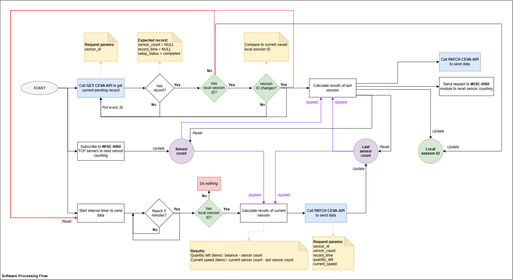

How the system operates
This page explains the core logic in a simple operator-friendly way: counting, checking pending records, periodic updates and automatic session handling.
End-to-end operating logic
1. Counting at the field layer
Each production line uses one SICK photoelectric sensor connected to one WISE-4060/WISE-4051 module. The WISE module performs the pulse counting locally. This means the gateway does not have to process every pulse directly, which improves reliability and reduces load on the TDC-X.
2. Reading the line counter
The gateway reads the WISE counter at a configured cycle. The read value becomes the current hardware count shown on the Operations page.
3. Checking the latest pending record
The gateway regularly asks the server for the latest pending record for each sensor. A record is accepted only when its status is completed, sensor count and record time are empty. If no valid record is available yet, the line keeps its current local state and waits for the next fetch cycle.
4. Sending periodic updates
For an active session, the gateway calculates the current result and sends an update at the configured interval. The default update interval is 5 minutes.
- Sensor count = the latest hardware counter read from the WISE device.
- Quantity left = balance − sensor count.
- Current speed = current sensor count − last submitted sensor count.
5. Handling temporary communication failure
If a PATCH update cannot be sent successfully from the gateway side, the request is added to the durable update queue. The line still continues working. The queue retries failed updates automatically until they are sent successfully.
6. Handling a session change
When the server presents a new session ID, the gateway completes the previous session immediately, resets the line counter, and then starts using the new session.
- Finish the old session by creating a final update using the latest current count.
- If that send fails locally, keep it in the retry queue.
- Reset the WISE counter for the line.
- Adopt the new session and continue normal counting with the new record.

Important operating terms
Session
A production session identified by a session ID. A line normally continues counting within the same session until the server changes it.
Record
A pending server record linked to the current session. The gateway updates this record with the latest counting result.
Durable update queue
A local retry list that stores updates that could not be sent immediately. This protects data during network or server interruptions.
Local snapshots
Temporary locally stored count snapshots. These help the gateway preserve information while server communication is unavailable.